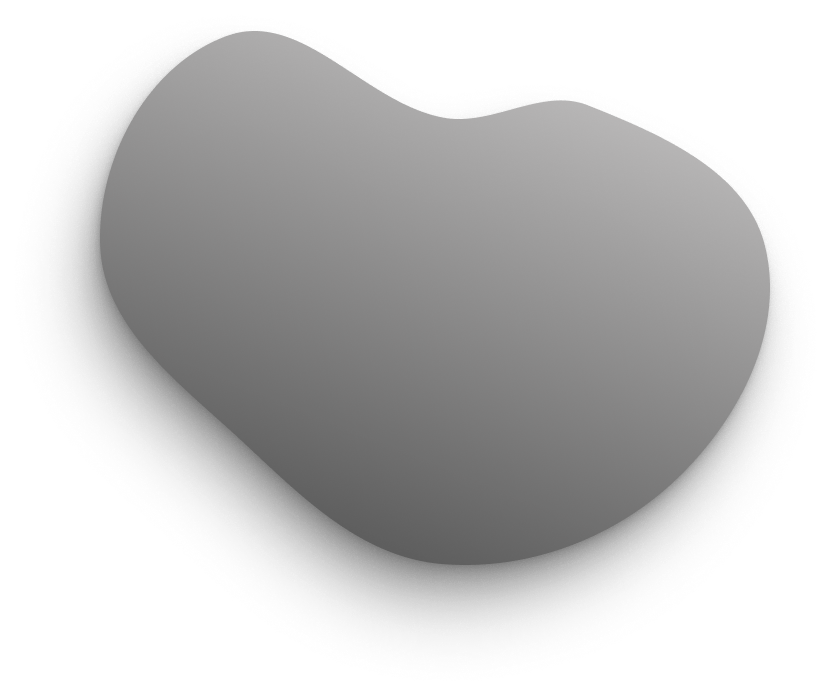
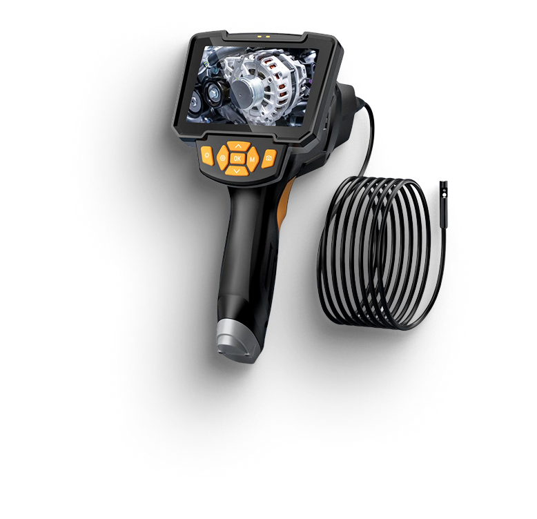

Эндоскопия моторная
Узнайте внутреннее состояние вашего двигателя всего за 30 минут
Эндоскопическая диагностика двигателя — быстро, точно, без разборки
подробнее  Внутренний осмотр двигателя с помощью эндоскопа
-

Обследование с помощью эндоскопа позволяет точно определить состояние внутренних элементов.
-

Экспертная диагностика — залог надежной работы двигателя и минимальных расходов на ремонт.
-

Быстрый и безболезненный способ проверить состояние вашего двигателя.
Как проходит эндоскопическая диагностика двигателя
Шаг 1. Подготовка
- Определяем модель двигателя и доступ к свечам. При необходимости снимаем крышку или патрубки.

Шаг 2. Доступ к цилиндрам
- Откручиваем свечи — это нужно, чтобы камера могла попасть внутрь двигателя.

Шаг 3. Ввод эндоскопа в цилиндры
- Через отверстие для свечи вводится гибкий эндоскоп с подсветкой и камерой.
- Камера передаёт изображение в реальном времени на экран.

Шаг 4. Фото- и видеофиксация
- Осматриваем поршни, цилиндры, клапаны. Всё фиксируется на фото и видео.

Шаг 5. Результат и рекомендации
- Вы получаете фото/видео, устные комментарии и рекомендации по дальнейшему обслуживанию.

Что можно выявить:
- Нагар и отложения
- Следы перегрева
- Царапины, сколы, задиры
- Повреждения клапанов, прогар поршней и др.
Цены на эндоскопическую диагностику
Рядные двигатели
- Количество цилиндров
- 2 цилиндра
- 3 цилиндра
- 4 цилиндра
- 6 цилиндров
- Цена
- от 6 000 тг.
- от 8 000 тг.
- от 10 000 тг.
- зависит от доступа
V-образные двигатели
- Количество цилиндров
- от 6 до 12 цилиндров
- Цена
- Цены зависят от конфигурации и доступа к цилиндрам. Уточняются при осмотре.
Оппозитные двигатели
- Сложный доступ, особенно у Subaru.
- Стоимость варьируется — рассчитывается индивидуально.
Примечание
- Итоговая цена формируется с учётом:
- — типа двигателя
- — количества цилиндров
- — сложности доступа к ним
Наш адрес на карте
Приходите к нам!
Мы находимся в городе Алмата, Ауэзовский район. Приезжайте на диагностику, всё покажем и расскажем на месте.
Адресс: Аксай-4 м-н, Ауэзовский район, Алматы, 050063/A10B2C1
График: Работаем каждый день, кроме пятницы: 9:30 - 17:00
Телефон: +7 (705) 180 17 44
Посмотрите на карте ниже, как к нам удобнее добраться.
Часто задаваемые вопросы
- Нужно ли разбирать двигатель?
Нет, диагностика проводится через свечные отверстия без разборки. - Сколько времени занимает процедура?
Обычно 30–40 минут, включая консультацию. - Можно ли получить фото/видео?
Да, мы предоставляем материалы после осмотра. - Какие двигатели вы обслуживаете?
Рядные, V-образные, оппозитные — уточняем при записи.